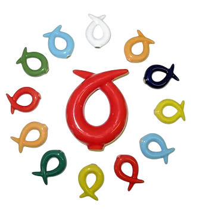

Гармонизатор "Ключ Жизни"

На основе «позитивного ключа» психограммы Я.С.Ибадовым в 2005 г. был создан гармонизатор «Ключ Жизни». Гармонизатор выполнен из природного материала в виде витков спирали, имеющих правостороннее – Ян и левостороннее – Инь направление витка. Принцип работы гармонизатора основан на изменении информационных составляющих поля объекта посредством эффекта формы. Это приводит к преобразованию потоков энергии при прохождении через устройство и переходу объекта в новое равновесное состояние гармоничного взаимодействия мужского (Ян) и женского (Инь) начал. Гармонизатор оказывает преобразующее и гармонизирующее воздействие на окружающую среду и биологические объекты, будучи помещенным в пространство жизнедеятельности объекта.Сочетание янского и иньского «Ключей» образует двойную спираль, которая имеет большое значение как элемент жизни. Человек вписан в схему вселенской эволюции, вбирает в себя земные и небесные потоки Ци и соединяет, таким образом, небесное начало Ян и земное начало Инь внутри себя. Двойная спираль лежит в основе человеческого генетического кода и представляет собой графический образ ритма в природе. В совокупности оба «Ключа» являются универсальным гармонизатором, приводящим организм человека в состояние энергетического баланса.
На основании проведенных исследований, таких как: -электроэнцефалография, -электрокардиография, -миография конечностей, -реовазография конечностей, -реоэнцефалограмма, -вариабельность сердечного ритма, -темнопольное сканирование крови, -метод газоразрядной визуализации, -определение торсионного фазового портрета и др.
Было доказано, что применение гармонизатора «Ключ Жизни» позволяет: - улучшить микроциркуляцию конечностей, восстановить нарушенный лимфоотток в органах и системах; - наладить работу энергетических центров (чакр) человека; - улучшить обменные процессы в организме и повысить иммунитет; - облегчить процесс реабилитации при хронических заболеваниях; - нормализовать и восстанавливать функции нейронов головного мозга; - снять усталость стресс, головную боль, активизировать процессы мышления, памяти; - структурировать воду, улучшая ее физико-химические и биологические свойства; - восстанавливать работу сердечно-сосудистой системы; - улучшить реологические свойства и основные функции крови: дыхательную, гомеостатическую, защитную; - активизировать процессы омоложения организма на клеточном уровне. - восстанавливать энергоинформационные характеристики различных объектов и веществ; - повысить эффективность сельскохозяйственного производства и др.
Преимуществами гармонизатора «Ключ Жизни» является: - высокая эффективность; - экологическая чистота; - экономичность (восполняет ресурс от естественного фона Земли); - широкая область применения; - простота использования. - возможность широкого применения в домашних условиях.
На основании гармонизатора «Ключ Жизни» совместно с Я.С.Ибадовым были разработаны методы и способы применения гармонизатора. К ним относятся: - очищение чакр. - очищение энергетических каналов; - очищение зрительных каналов; - использование воды из «Ключа жизни»: - употребление внутрь; - инстилляции в глаза; - интраназальное использование воды; - трансдермальное применение; - аппликации на кожу; - принятие ванн с водой из «Ключа»; - втирание в биологически активные точки и др.
Массаж позвоночника с помощью гармонизатора: - Инь-«Ключом»; - Ян-«Ключом»; - Инь- и Ян-«Ключами».
Кулон-гармонизатор «Ключ Жизни» для постоянного ношения.